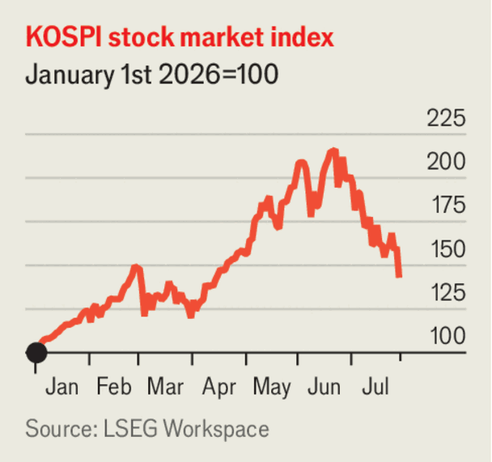

Business
Jul 30th 2026
America’s Federal Reserve held its main interest rate in the range of 3.5-3.75%. Three of 12 members of the central bank’s rate-setting committee voted to raise rates by a quarter of a percentage point. Kevin Warsh, the Fed’s chair, hinted that the bank could raise rates if the rate of inflation—which has been running above the bank’s 2% target—continues to remain high. Bond markets seemed unconvinced by his commentary. The yield on 30-year Treasury bonds rose above 5.2%, its highest since 2007.
Meta, an American tech giant, made $16bn in profit in the second quarter, down by 14% from the same period last year. Its cashflow fell by 91%, as it increased its spending on artificial-intelligence infrastructure such as data centres. Meta’s share price fell by about 7.5% in after-hours trading.

Financial regulators in South Korea said they would limit access to some leveraged exchange-traded funds (ETFs) after the KOSPI, the country’s main stock index, fell sharply. Officials blame the funds for exaggerating moves in the share prices of South Korean companies. After rising sharply in the first half of the year, the index has fallen by nearly 40% from its peak in late June (though it is still 30% higher than at the start of the year).
SK Hynix, a South Korean chipmaker, made profits of 93.9trn won ($64.6bn) in the second quarter, up 1,240% year on year. Yet this was still below analysts’ expectations. Investors are concerned about the firm’s spending. Its share price fell by 6% on July 30th.
Over 50 companies, including Microsoft, Nvidia and OpenAI, signed a letter in support of open-weight AI models (which users can customise) as American firms seek to compete with cheaper Chinese competitors. Anthropic, a rival of OpenAI, published its own letter in response, saying it does not support a ban on open-weight models, but that they present safety risks by possibly allowing bad actors to modify leading-edge models.
Shares of ASML, the company that manufactures the tools used to make the most advanced semiconductors, has fallen by 13% since July 24th. The drop came after the Information, a news outlet, reported that China has started making its own deep ultraviolet lithography machines. Such machines are not the cutting edge of chipmaking tech, but they would represent a breakthrough for China.
CXMT, a chipmaker, became China’s most valuable onshore firm when its shares rose by 466% following its IPO in Shanghai. The company is China’s largest producer of memory chips, whose price has soared worldwide as the data-centre buildout raises demand. CXMT, which makes around 8% of DRAM chips (the kind used in smartphones and laptops), is likely to grow quickly if American firms pivot to buying Chinese chips for their consumer goods.
Paramount Skydance said it would pause its $111bn takeover of Warner Bros as courts consider a challenge to the deal from 12 American states. The trial will add hefty legal fees on top of the costs of the debt-heavy transaction. Neither firm is likely to take big risks while the acquisition is on hold, leaving Hollywood short of buyers for ambitious projects.
Kering, a luxury firm, reported organic sales growth for the first time in three years. The group, which operates brands such as Gucci and Saint Laurent, has suffered many of the same problems as other luxury firms as consumers tired of price hikes. Its boss, Luca de Meo, hopes new designers at many brands and closing underperforming stores will help the group grow again. Hermès and LVMH, two other luxury firms, also had positive sales in important divisions.
Apple launched a leasing scheme for many of its devices with Klarna, a payments firm. The iPhone-maker has raised prices for its products because of rising memory-chip costs. The initiative aims to attract thrifty consumers while limiting financial risk through the partnership. Prices to lease an iPhone start at $17.99 a month.
America banned imports of humanoid robots, citing “unacceptable risks” to national security. The Federal Communications Commission said the devices, which are mostly made in China, could “surveil Americans”. The regulator also blocked foreign-made power inverters, which are used in data centres and solar panels.
FIFA, football’s governing body, proposed raising $4.2bn by selling stakes in a venture to help run its tournaments, including the World Cup. Josh Kushner, the brother of Donald Trump’s son-in-law, has been tapped as an investor. FIFA’s member associations must approve the plan. UEFA, which governs the European game, said FIFA was selling the “soul...of football”. The European Union vowed to investigate it.